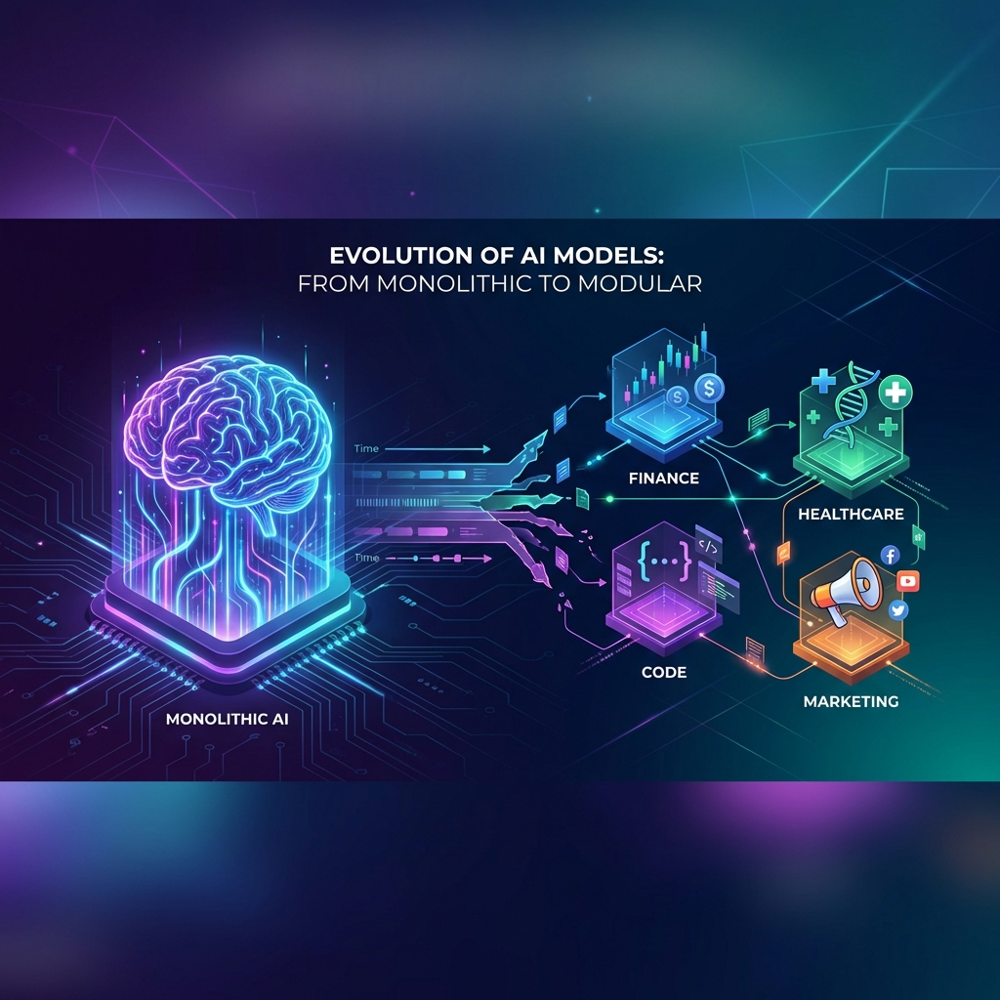
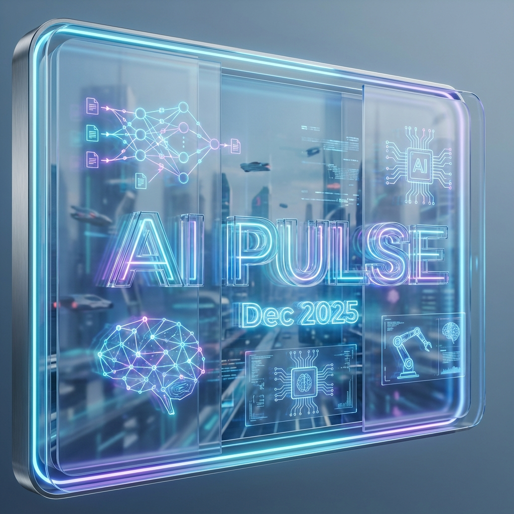

Co je nového ve světě umělé inteligence
Moltbook je sociální síť „ve stylu Redditu“, kterou obývají téměř výhradně autonomní AI agenti. Postují, komentují a vytvářejí vlastní komunity.
Otevřít článek →Nový AI-native workspace pro vědce a učitele. LaTeX editor, GPT-5.2 asistence a týmová spolupráce v jednom nástroji.
Otevřít článek →
💡 TrendLeden 2026Kompletní přehled klíčových trendů v AI: evoluce LLM, multimodální generace, podnikové nástroje a dopady na vzdělávání.
Otevřít článek →Jak využít AI k ochraně vašeho soukromí, bezpečí a duševního klidu. Sada 8 praktických promptů pro digitální i reálný život.
Otevřít článek →Závod o AI ve zdravotnictví se zostřuje. Anthropic uvedl Claude for Healthcare pouhé dny po OpenAI.
⚠️ Toto není lékařské doporučení.
ChatGPT Health pro spotřebitele a ChatGPT for Healthcare pro nemocnice. Nejambicióznější expanze AI do zdravotnictví.
⚠️ Toto není lékařské doporučení.
OpenAI oznámilo testování reklam v ChatGPT pro bezplatné uživatele. Co to znamená pro uživatele a jaká jsou bezpečnostní opatření?
Otevřít článek →Kompletní přehled klíčových iniciativ, nástrojů a trendů v oblasti AI ve vzdělávání. Program základka.ai, kurikulum AI dětem, praktické nástroje pro pedagogy.
Otevřít článek →Co je potvrzeno, co je hype a jaká je realita o domléném modelu Gemini 3.5? Rozbor úniků, faktů a spekulací.
Otevřít článek →
📰 ZprávaProsinec 2025Týdenní přehled AI novinek: Claude Opus 4.5, DeepSeek V3.2, Google Gemini 3, regulace USA a další.
Otevřít článek →Diskuze o etických otázkách spojených s umělou inteligencí. Proč je důležité rozumět AI nejen jako nástroji.
Otevřít článek →Proč je v době AI ještě důležitější umět kriticky myslet, ověřovat informace a nebrat vše za bernou minci.
Otevřít článek →Žádný článek neodpovídá vašemu hledání. Zkuste jiný výraz nebo filtr.